First 2012 Update
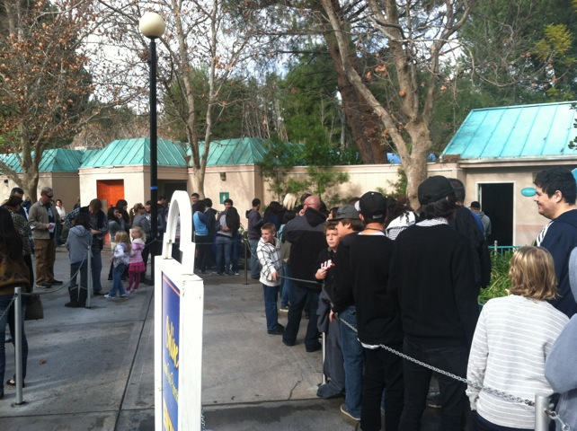
All right. We may have already took two visits to Knotts Berry Farm this year. But this is our first official update of the year as well as our first visit to Six Flags Magic Mountain for the year. Chad was out from Oklahoma, so a bunch of us went over to SFMM to hang out together and we had a blast.
 Batman was running pretty sluggish today. But what do you expect on a chilly day in January.
Batman was running pretty sluggish today. But what do you expect on a chilly day in January.
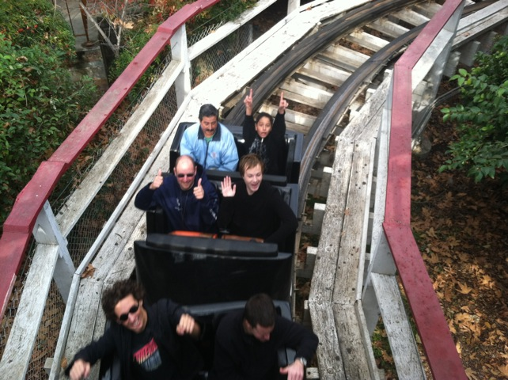
"Hey guys!!!! Hows it going!!!?"
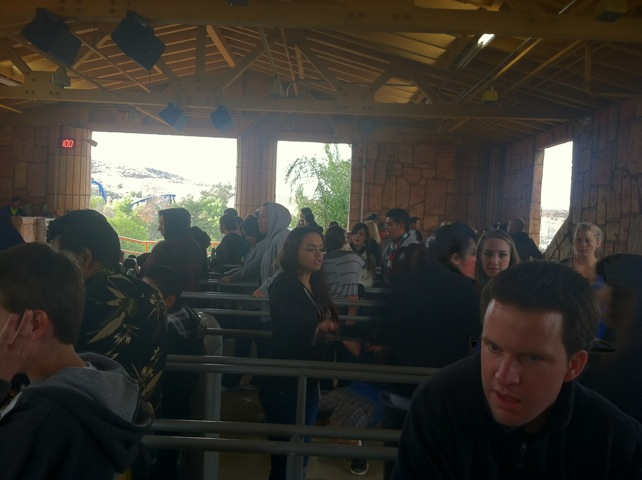
Damn. It's noon, and this is the only line Goliath has. We hit the park on a really good day.
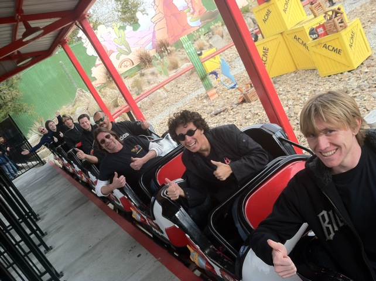
Incrediblecoasters Takeover of Roadrunner Express!!! =)
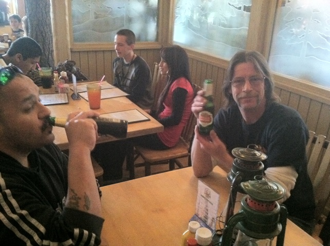
"Dude. Screw Lex Luthor. SFMM now serves beer. Best decision the park ever made."
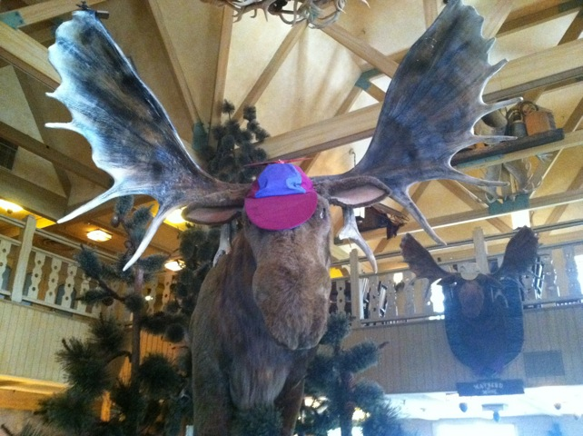
"I'm a moose. I live in the mooseburger lodge. Gimme a new hat. This one looks quite stupid on me."
 Yeah. That's how X2's line should always be. =)
Yeah. That's how X2's line should always be. =)
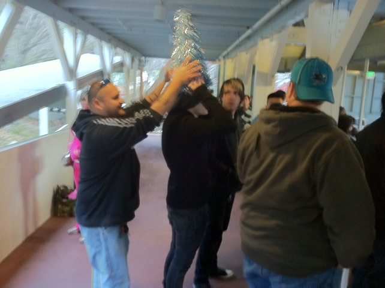
"I don't care that its January!!! You will wear the Christmas Tree and you will embrace Christmas!!!!"
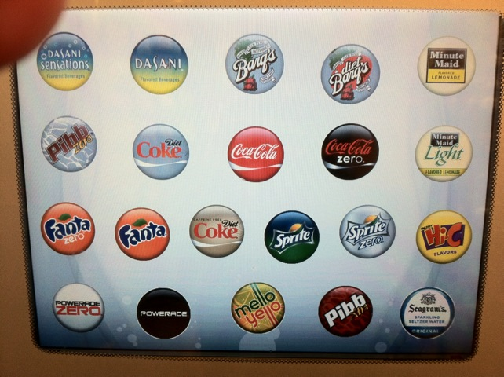
Good news. They now have Mello Yello in the Freestyle Coke Machine. YAY!!!!!!!! =) Bad news. They got it by getting rid of Vault. BOO!!!!!!!!!!! =(
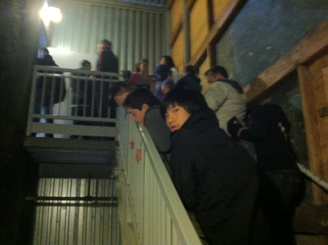
Holy Crap!!! Not worth the wait!!! Not worth it at all!!!
 We got on Green Lantern since last time Chad was here, Green Lantern wasn't built yet.
We got on Green Lantern since last time Chad was here, Green Lantern wasn't built yet.
 Ooh. The yellow of Supermans rails is really shining.
Ooh. The yellow of Supermans rails is really shining.
 Ooh. Batman the Ride at sunset.
Ooh. Batman the Ride at sunset.
 Green Lantern was running especially lame today since they were balancing the cars. F*CKING LAME!!!!!!!! =(
Green Lantern was running especially lame today since they were balancing the cars. F*CKING LAME!!!!!!!! =(
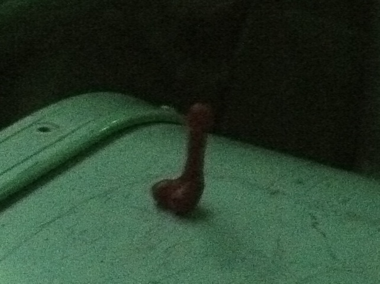
Dammit!!! Who left their dick on the trash can!!!?
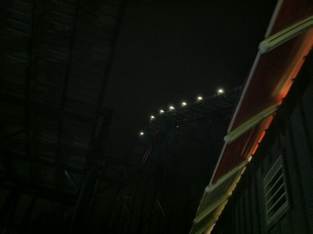
Yeah. We had to take another ride on X2 since...Do we even need a reason!!! It's X2!!!!!
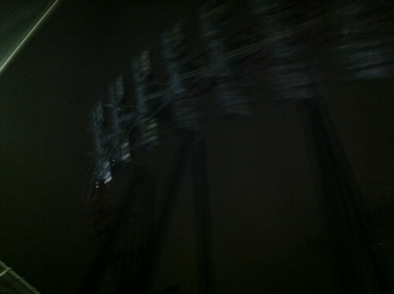
Dude!!!! We got stuck on X2's lifthill for like 10 minutes!!!! And it was awesome!!!!!!! =)
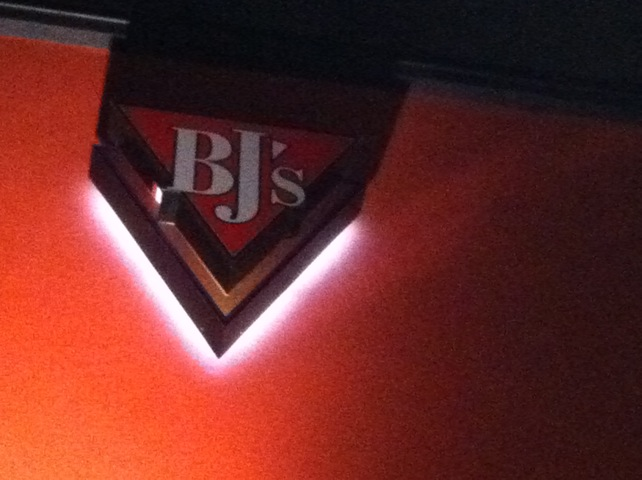
After fun at the park, we tried to eat at the Lazy Dog Cafe, but they couldn't seat us for an hour, so we went to BJs instead and had a ton of fun. =)
Home